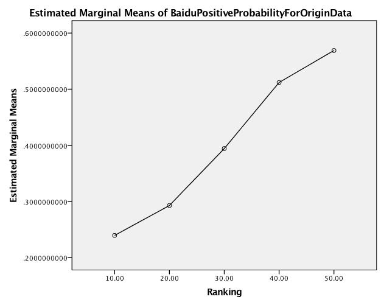
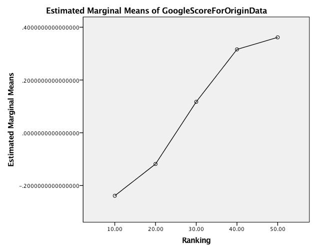

Table of Contents
-- mode: org --
1 Each colom represent mean
| Column | Mean | remark |
|---|---|---|
| F | ranking | |
| G | Chinese origin data | |
| H | Google translated data | |
| I | Baidu Chinese sentiment analysis positive probability | base on Chinese origin data |
| J | Baidu Chinese sentiment analysis confidence | base on Chinese origin data |
| K | Baidu Chinese sentiment analysis Negative probability | base on Chinese origin data |
| L | Baidu Chinese sentiment analysis the category | base on Chinese origin data |
| M | Baidu English sentiment analysis positive probability | base on Google translated data |
| N | Baidu English sentiment analysis confidence | base on Google translated data |
| O | Baidu English sentiment analysis Negative probability | base on Google translated data |
| P | Baidu English sentiment analysis the category | base on Google translated data |
| Q | Google Chinese sentiment analysis score | base on Chinese origin data |
| R | Google Chinese sentiment analysis manitude | base on Chinese origin data |
| S | Google English sentiment analysis score | base on Google translated data |
| T | Google English sentiment analysis manitude | base on Google translated data |
| U | Yandex translated data | base on Chinese origin data |
| V | Google English sentiment analysis score | base on Yandex translated data |
| W | Google English sentiment analysis manitude | base on Yandex translated data |
| X | Baidu translated data | |
| Y | Google English sentiment analysis score | base on Baidu translated data |
| Z | Google English sentiment analysis manitude | base on Baidu translated data |
| AA | Baidu English sentiment analysis postitive probability | base on baidu translated data |
| AB | Baidu English sentiment analysis confidence | base on baidu translated data |
| AC | Baidu English sentiment analysis Negative probability | base on baidu translated data |
| AD | Baidu English sentiment analysis the category | base on baidu translated data |
1.1 note
- Baidu sentiment analysis Category Note
- 2 mean to belong to the positive category, 1 mean to belong to the neutral category, and 0 mean to belong to the Negative category
- Google sentiment analysis Note
- The score of a document's sentiment indicates the overall emotion of a document. The magnitude of a document's sentiment indicates how much emotional content is present within the document, and this value is often proportional to the length of the document.
- A document with a neutral score (around 0.0) may indicate a low-emotion document, or may indicate mixed emotions, with both high positive and negative values which cancel each out. Generally, you can use magnitude values to disambiguate these cases, as truly neutral documents will have a low magnitude value, while mixed documents will have higher magnitude values.
- “Clearly positive” and “clearly negative” sentiment varies for different use cases and customers. You might find differing results for your specific scenario. We recommend that you define a threshold that works for you, and then adjust the threshold after testing and verifying the results. For example, you may define a threshold of any score over 0.25 as clearly positive, and then modify the score threshold to 0.15 after reviewing your data and results and finding that scores from 0.15-0.25 should be considered positive as well.
2 Baidu Chinese sentiment analysis VS Google Chinese sentiment analysis
2.1 Baidu Chinese sentiment analysis postitive probability compare with different ranking(origin data)
| Ranking | Mean | Valid N | std.deviation | Total N | Minimum | Maximum |
|---|---|---|---|---|---|---|
| Ranking 10 | 0.239365965000 | 8525 | 0.2219412270000 | 8572 | 0.000106 | 1.000000 |
| Ranking 20 | 0.292751426000 | 13141 | 0.2357115580000 | 13226 | 0.000162 | 1.000000 |
| Ranking 30 | 0.394234 | 18821 | 0.273685 | 18974 | 0.000214 | 1.000000 |
| Ranking 40 | 0.511990 | 8717 | 0.300618 | 8790 | 0.001050 | 1.000000 |
| Ranking 50 | 0.568988 | 4271 | 0.312815 | 4307 | 0.000536 | 1.000000 |

2.1.1 Error Rate
| Ranking | Error Rate |
|---|---|
| Ranking 10 | 0.0054829678 |
| Ranking 20 | 0.0064267352 |
| Ranking 30 | 0.0080636661 |
| Ranking 40 | 0.0083048919 |
| Ranking 50 | 0.0083584862 |
Total Error Rate: 0.0073140396
2.2 Google Chinese sentiment analysis scores compare with different ranking (origin data)
| Ranking | Mean | Valid N | std.deviation | Total N | Minimum | Maximum |
|---|---|---|---|---|---|---|
| Ranking 10 | -0.238742 | 8567 | 0.445384 | 8572 | -0.900000 | 0.900000 |
| Ranking 20 | -0.118380 | 13210 | 0.448064 | 13226 | -0.900000 | 0.900000 |
| Ranking 30 | 0.117291 | 18940 | 0.462095 | 18974 | -0.900000 | 0.900000 |
| Ranking 40 | 0.315915 | 8778 | 0.458128 | 8790 | -0.900000 | 0.900000 |
| Ranking 50 | 0.361626 | 4305 | 0.441309 | 4307 | -0.900000 | 0.900000 |

2.2.1 Error Rate
| Ranking | Error Rate |
|---|---|
| Ranking 10 | 0.0005832944 |
| Ranking 20 | 0.0012097384 |
| Ranking 30 | 0.0017919258 |
| Ranking 40 | 0.0013651877 |
| Ranking 50 | 0.0004643603 |
Total Error Rate: 0.0012808851
3 Baidu English sentiment analysis VS Google English sentiment analysis
3.1 Base on Google translated data
3.1.1 Baidu English sentiment analysis postitive probability compare with different ranking
| Ranking | Mean | Valid N | Std.deviation | Total N | Minimum | Maximum | Variance |
|---|---|---|---|---|---|---|---|
| Ranking 10 | 0.517526 | 7968 | 0.134711 | 0.005045 | 1.000000 | 0.018147 | |
| Ranking 20 | 0.531020 | 12225 | 0.141214 | 0.037275 | 1.000000 | 0.019941 | |
| Ranking 30 | 0.540824 | 17457 | 0.137174 | 0.014443 | 1.000000 | 0.018817 | |
| Ranking 40 | 0.567782 | 8163 | 0.144971 | 0.051860 | 1.000000 | 0.021016 | |
| Ranking 50 | 0.589054 | 4006 | 0.150737 | 0.086614 | 1.000000 | 0.022722 |